Специалисту по СВР
Специалист по СВР обладает по сравнению с обучающимися и кураторами расширенными привилегиями. Кроме привилегий на добавление учащихся и кураторов в группы специалист по СВР обладает возможностями самостоятельного создания групп и их удаления. В связи с этим специалист по СВР должен внимательно следить за выполняемыми им операциями в электронном портфолио обучающегося. Специалист по СВР не должен выполнять каких-либо операций вне своего факультета/института.
1. Возможности
- Просмотр количества участников в каждой группе.
- Экспорт результатов достижений для каждого из разделов портфолио.
- Управление студентами и кураторами.
2. Алгоритм работы специалиста по СВР
Цель: Управление студентами и кураторами. Прикрепление студентов и кураторов к группам. Создание, редактирование и удаление академических групп. Просмотр статистики наполняемости групп студентами. Экспорт сведений по заполнению разделов портфолио каждой из групп факультета/института. Анализ результатов заполнения разделов портфолио каждой из групп.
2.1. Просмотр количества участников для каждой группы
- Перейдите на страницу портфолио Сервисы | Вход в ЭИОС | Личный кабинет | Обучающегося ВО | Портфолио. > при необходимости введите свой логин и пароль
- Перейдите в раздел управления группами. Для этого справа в блоке Настройки разверните пункт Пользователи, щелкнув по нему. После этого щелкните по ссылке Группы.

- Перейдите в раздел Обзор, щелкнув по соответствующей ссылке.
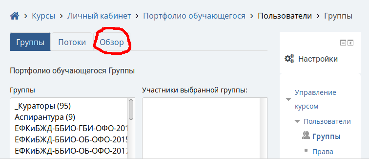
- Активируйте фильтрацию групп по своему факультету/институту. Для этого в раскрывающемся списке Поток выберите необходимый факультет/институт.
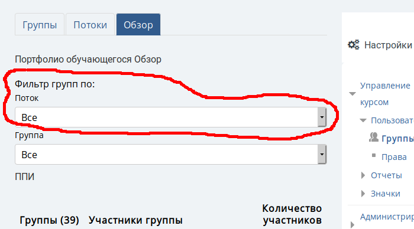
- В результате фильтрации вы увидите ниже список групп вашего факультета/института. Для каждой группы (1 на рис. ниже) будет отображаться список всех ее пользователей1 (2 на рис. ниже) и общее количество участников (3 на рис. ниже).
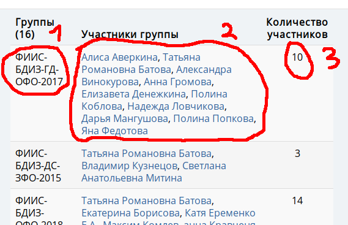
- Также можно выполнить фильтрацию по академической группе. Для этого необходимо в раскрывающемся списке Группа выбрать требуемую группу.
2.2. Экспорт результатов достижений для каждого из разделов портфолио
- В портфолио обучающегося перейдите в один из его разделов, например Научно-исследовательская и проектная деятельность.
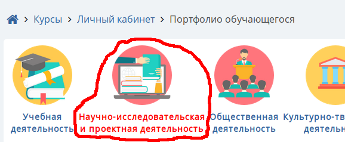
- Перейдите в подраздел Экспортировать.
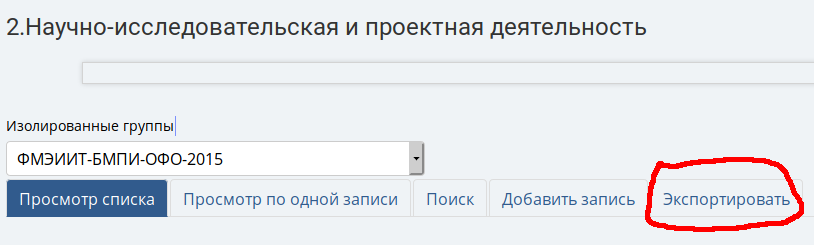
- Выберите интересующую вас академическую группу в списке Изолированные группы.
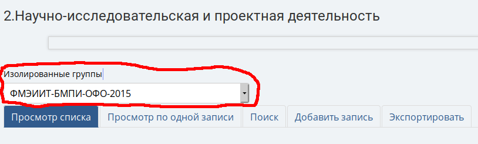
- Укажите формат экспорта.
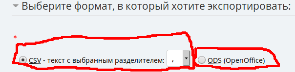
- Выберите поля данных для экспорта.
- Осуществите экспорт данных кнопкой Экспорт записей.
- После этого у вас произойдет скачивание файла табличного процессора, который можно открыть в LibreOffice Calc или Microsoft Office Excel и выполнить самостоятельно анализ.
2.3. Управление студентами и кураторами.
-
Перейдите на страницу портфолио Сервисы | Система управления обучением | Личный кабинет | Обучающегося ВО | Портфолио.
-
Перейдите в раздел управления группами. Для этого справа в блоке Настройки разверните пункт Пользователи, щелкнув по нему. После этого щелкните по ссылке Группы.
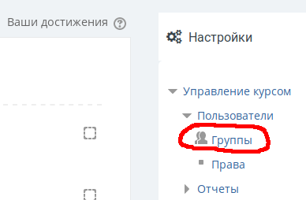
- Выберите группу в которую необходимо добавить куратора/студента, например “ЕФКиБЖД-ББИО-ОБ-ОФО-2015”, щелкнув по ней в левом списке.
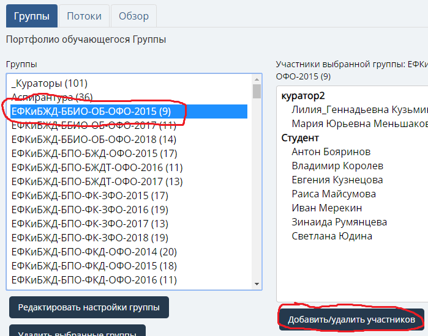
При этом справа отобразятся участники этой группы 4. Откройте окно добавления/удаления участников группы с помощью кнопки Добавить/Удалить участников. 5. Для удаления щелкните по куратору/студенту в левом списке и подтвердите удаление кнопкой Удалить.
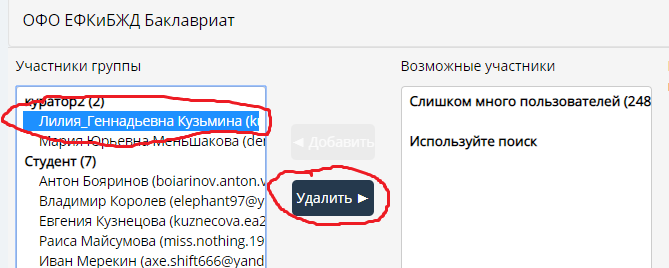
- Для добавления введите фамилию/имя/отчество куратора в поле Найти под правым списком Возможные участники. Выберите из результатов фильтрации необходимого пользователя и добавьте его кнопкой Добавить.
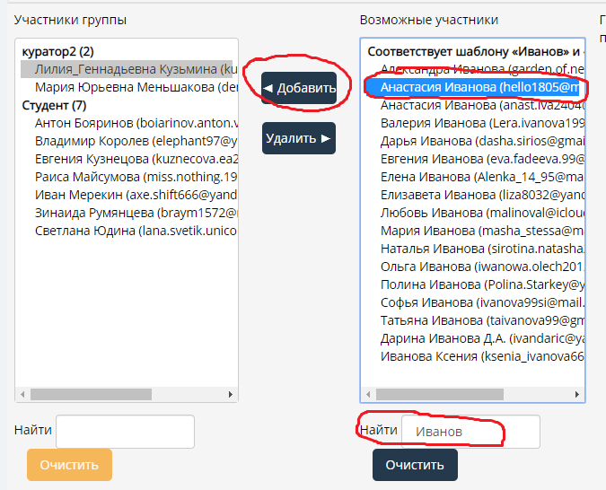
- После завершения добавления куратора вы можете вернуться обратно к списку всех групп, щелкнув по кнопке Назад к группам.